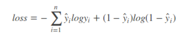
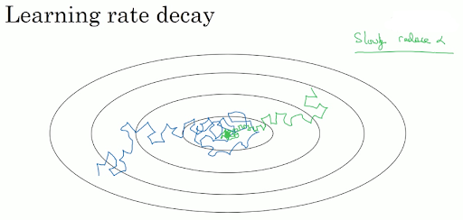

Sieci Neuronowe
Neuron
- Struktura wzorowana na budowie biologicznego neuronu
- Dowolna liczba wejść z różną wagą
- Jedno wyjście
Wyjście to wynik funkcji aktywacji dla sumy ważonej wejść:
\(Y = f(\sum_{i=1}^{n} W_i*X_i)\)

Funkcja aktywacji
Powinna być nieliniowa, aby wyjście nie było kombinacją liniową wejść.
Multi Layer Perceptron - Budowa
Budowa MLP polega na zgrupowaniu neuronów w warstwy.
- Wszystkie neurony w jednej warstwie mają tyle samo wejść.
- Wyjście neuronu jest wejściem dla każdego neuronu w kolejnej warstwie.
\(WC_i\) - Liczba wag w warstwie \(i\)
\(N_i\) - liczba neuronów w warstwie i
\(WC_i\) = \(N_i*N_{i-1}\) dla \(i\gt1\)
\(WC_i\) = \(N_i\) dla \(i=1\)

Backpropagation
Celem szkolenia jest zminimaliozwanie funkcji kosztu: \(C(w_1, w_2, ..., w_M) =\) np. błąd średniokwadratowy
Wyznaczenie gradientu \(\nabla C = [\frac{dC}{dw_1}, \frac{dC}{dw_2}, ..., \frac{dC}{dw_M}]\) pozwoli na dostosowanie wag i zmniejszenie błędu.
Aby wyznaczyć elementy wektora \(\nabla C\) stosuje się algorytm propagacji wstecznej.
Konceptualnie jest to po prostu liczenie pochodnych po różnych wagach przy użyciu reguły łańcuchowej.
Przykłady
- \(x\) i \(y\) to stałe wektory o równych wymiarach
- \(C(y, f^N(W^Nf^{N-1}(W^{N-1}...f^1(W^x))))\) to funkcja kosztu, zmiennymi są wagi
- \(W^i\) to macierz wag w i-tej warstwie
- \(W^i_j\) to wektor wag wejściowych w i-tej warstwie dla j-tego neuronu
- \(z^i_j\) to nieaktywowane wyjście j-tego neuronu w i-tej warstwie
- \(a^i_j = f(z^i_j)\)
Przykłady:
- \(\frac{dC}{dW^N_j} = \frac{dC}{da^N}\frac{da^N}{dz^N}\frac{dz^N}{dW^N_j}\)
- \(\frac{dC}{dW^{N-1}_j} = \frac{dC}{da^N}\frac{da^N}{dz^N}\frac{dz^N}{da^{N-1}}\frac{da^{N-1}}{dz^{N-1}}\frac{dz^{N-1}}{dW^{N-1}_j}\)
Vanishing gradient problem
- Wartości gradientów w pierwszych warstawch sieci osiągają bardzo małe wartości, przez co prawie się nie zmieniają.
- Wynika to z tego, że podczas liczenia pochodnych z użyciem reguły łańcuchowej mnożymy wiele małych wartości.
Rozwiązania: Batch Normalization, użycie funkcji aktywacji, które nie skutkują małymi pochodnymi.

Metody uczenia
- SGD - Stochastic Gradient Descent
- Gradient jest liczony dla każdej próbki z osobna, a nie całego zbioru danych na raz
- Przyspiesza czas szkolenia
- SGD with momentum
- Przy liczeniu gradientu brana jest pod uwagę uśredniona wartość z wielu poprzednich aktualizacji lub tylko poprzednia aktualizacja.
- Nie modyfikujemy stałej uczenia \(\alpha\)
- Parametr \(\beta\) określa wagę poprzednich aktualizacji
- Nowa wartość:
- \(j\) - indeks wagi
- \(i\) - iteracja
- \(\Delta w_j^{i}=\beta \Delta w_{j}^{i-1}+\alpha \frac{dC}{dw_j}\)
RMSProp
- Wykorzystuje średnią z przeszłych gradientów do dostoswanie stałej uczenia \(\alpha\)
- Nowa wartość:
- \(v_j\) - średnia kwadratowa poprzednich gradientów
- \(\Delta w_j=\frac{\alpha}{\sqrt{v_j}}\frac{dC}{dw_j}\)
- ADAM
- Połączenie RMSProp i SGD with momentum
- Uwzględniamy poprzednie aktualizacje oraz dostosowujemy stałą uczenia \(\alpha\)
- Nestorov
- Podobna do SGD with momentum
- Wagi są aktualizowane zgodnie z pędem i dopiero wtedy liczony jest kolejny gradient
Loss functions
- Klasyfiaktory binarne
Binary Cross-Entropy

Hinge loss
Squared Hinge Loss

Klasyfikatory wieloklasowe
Categorical Cross-Entropy
- Kullback-Leibler divergence(relative entropy)
Pozwala na porónwanie dwóch rozkładów prawdopodobieństwa.
Inicjalizacja wag
- Dobra inicjalizacja wag pomaga zredukować Vanishing Gradient Problem.
- Kilka ważnych cech:
- Wagi nie powinny być małe
- Wagi nie powinny być takie same
- Wagi powinny mieć wysoką wariancję
- Wybór metody inicjalizacja zależny od użytych funkcji aktywacji
- Pod uwagę brana ilość wejść/wyjść w wartswie.

Stała uczenia
- Określa jak duży krok wykonywany jest przy aktualizacji wag.
- Learning rate decay - wraz z liczbą epok zmniejsza się stałą uczenia.
- Pozwala na zmniejszenie szansy na 'przeskoczenie' minimum
- Przypomina simulated annealing

Batch normalization
- Normalizacja polega na przeskalowaniu cech na ten sam przedział. Najczęście na [0; 1].
- Batch normalization działa tak samo jak normalizacja danych wejściowych, z tym że znajduje się pomiędzy warstwami.
- Co daje batch normalization?
- Przestrzeń wejść jest bardziej symetryczna - można używać wyższych stałych uczenia
- Zmniejsza istotność wag początkowych.

Regularyzacja
- Celem regularyzacji jest zmniejszenie overfittingu.
- Innymi słowy: staramy się zwiększyć bias i zmniejszyć wariancję na zbiorze treningowym.
- Poświęcamy dokładność na zbiorze treningowym licząc na otrzymanie lepiej generalizującego modelu.
Regularyzacja Dropout
Przypisujemy dla warstwy pewne prawdopodobieństwo pominięcia neuronu.
Pominięte neurony nie biorą udziału w danej iteracji gradient descent.
Regularyzacja L1 i L2 Polegają na dodaniu pewnego wyrażenia regularyzującego do funkcji kosztu.

- Regularyzacja przez augmentację
- Polega na wygenerowaniu nowych danych treningowych na podstawie już posiadanych.
- Zwiększanie ilości danych zmniejsza wariancję i zwiększa bias.
Sieci CNN - budowa
- Sieci CCN składają się z kilku następujących typów warstw:
- Warstwy konwolucyjne
- Warstwy poolingu
- Warstwy w pełni połączone - takie same jak w MLP

Warstwy konwolucyjne
- Wykonują proces konwolucji, polegający na, aplikacji filtra na pewnym framencie danych wejściowych.
- Aplikacja filtra polega na obliczeniu dot productu między filtrem a fragmentem danych.
- Parametry:
- stride - pozwala na zmianę sposobu przesuwania filtra
- padding - pozwala na dodanie zer wokół, aby uniknąć zmniejszania utraty wymiarów

- W warstwach konwolucyjnych zwykle znajduje się więcej niż jeden filtr.
Warstwy poolingu
- Pozwala na downsampling wejść.
- Parametr filter pozwala na wybór wielkości okna do uśrednienia.
- Parametr stride pozwala określić jak wygląda przesuwanie okna.
- Dwie popularne sposoby poolingu:
- Average pooling - uśredniona wartość z okna
- Maximum pooling - maksymalna wartość z okna

Architektury
- AlexNet - 2012 - 5 warstw konwolucyjnych, 3 warstwy MLP, 60 milionów parametrów. Jako pierwsza używała funkcji ReLU do aktywacji.
- Inception - 2014, 2015, 2016 - Wprowadza ideę budowania sieci na bazie modulów. Wewnątrz modułu może być wiele równoległych wartsw konwolucyjnych. Moduły nazwano 'Inception modules'.
- Residual neural network - 2015, 2017 - wprowadza tak zwane
skip connections, czyli połączenia pomiędzy nie sąsiadującymi warstwami.
Sieci CNN - uczenie
- W przypadku warstw końcowych trening wygląda identycznie jak w MLP.
- Warstwy z poolingiem nie posiadają parametrów do trenowania.
- W warstwach konwolucyjnych wagami są wartości filtrów.
- Ideowo backpropagation oraz dostosowywanie wag działa jak w MLP.
- Przy liczeniu pochodnych trzeba uwzględnić warstwy poolingu.
Scikitlearn
- Wsparcie dla MLP:
- API identycznie jak dla pozostałych modeli:
fit(X, y),predict(x), etc… - Można dostosować wielkości ukrytych wartsw, funkcje aktywacji, solvery i inne hiperparametry.
- Brak wsparcia dla akceleracji GPU.
- Brak wsparcia dla CNN.
- Nie nadaje się do produkcyjnych zastosowań.
Keras
- Wysokopoziomowa biblioteka umożliwiająca łatwe definiowanie sieci neuronowych.
- Posiada wsparcie dla większości popularnych typów warstw.
- Pozwala na tworzenie własnych typów warstw.
- Umożliwiającą akcelerację GPU, wspiera backendy dla kart Nvidia i AMD.
- Kompatybilny z API Scikitlearn, nakładka KerasClassifier
PyTorch
- W porównaniu do Kerasa dość niskopoziomowa.
- Bardziej elastycznia niż Keras, ale trudniejsza w użyciu.
- PyTorch Tensors - działają one podobnie jak tablice w numpy, ale operacje na nich są akcelerowane za pomocą GPU.
- Wspiera akcelerację GPU, ale tylko dla kart Nvidia z rdzeniami CUDA.
- Wspiera Javę i C++
Dziękujemy
Zespół
- Andrzej Ratajczak
- Damian Wasilenko
- Dawid Macek
- Mirosław Błażej